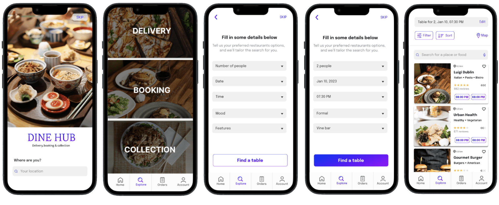

1. Overview
This project focuses on redesigning and rebranding restaurant booking app ReserveOut, and transforming it into Dine Hub, a unified platform for restaurant reservations, food delivery, and collection. The case study contains qualitative and quantitative user research methods, usability testing and a final prototype.
Main Objectives
- Redesign the ReserveOut app based on research insights to alleviate user pain points.
- Expand the app by adding features such as food delivery and collection.
- Enchance browsing experience by allowing user to filter by cuisine, mood and venue features.
- Improve accessibility by designing for users with food allergies, dietary restrictions, and food preferences.
Team Charter
We created a team charter to define our goals, roles, and responsibilities, ensuring clear communication and alignment throughout the project. This charter helped set expectations, establish collaboration guidelines, and streamline team decision-making processes.
Heauristic Evaluation
I conducted a heauristic evaluation of Reserveout app, to measure the usability of UI and provide insights to enhance product usability early in development.
2. Brainstorming
HMW & Stakeholders Map
During our brainstorming session, we conducted a How Might We (HMW) exercise, which helped us ask key questions and explore possible solutions for our product. This approach allowed us to generate various ideas and select a few of the best to guide our research. Then we created a list of stakeholders to help define our target audience for personas, user interviews, surveys, and usability testing.
Problem Statement & Scenario
We developed a problem statement for each stakeholder and followed up with a scenario.
3. User Research
Online Survey (76 Participants)
To gather qualitative data and user insights, we designed our survey to uncover pain points around restaurant reservations and food delivery. It explores questions like how users book tables, their preferred devices, overall satisfaction with online booking, and any missing features they wish existing apps offered.
The demand for a restaurant booking app is evident: while 66% of participants have never used one, 48% stated it would be their preferred reservation method. If given the option, users would prefer the quick and convenient experience of booking through an app.
Stakeholder Interview
To better understand our target audience, I conducted a one-on-one interview with a professional event planner to explore how they might benefit from our app.
Key Insights: develop an app that builds trust by incorporating email and phone confirmations, providing a contact number for the restaurant, inlcude each venue cancellation policy, and include a list of features such as terrace, private dining, parking and more.
4. Define
Persona
My primary persona is Maya, an ambitious woman working as a personal assistant. Her goals are to impress her boss and earn a promotion while also carving out free time for nights out with friends. I will use this persona to understand the target audience better and identify users' pain points.
Frustrations: long wait times for tables, limited vegetarian options, and insufficient allergen information.
Empathy Map
The objective of my empathy map is to capture the experience of booking a restaurant reservation. I gained a clearer understanding of the thought process behind making reservations. This exercise highlighted the typical approach users take and the pain points they encounter, helping me address these issues and find solutions for the app redesign.
Frustrations: having to search multiple platforms and online information not being updated.
5. Ideate
To-Be Journey Map
In the journey map, I focused on what my persona was doing, thinking, feeling, and their frustrations. The part I want to draw attention to is the opportunities section, where I explored potential solutions to user's pain points.
Opportunities: interactive app showing nearby restaurants, help section that explores how app works, confirmation by email or phone, contact information for the venue, option to go to last search, recommended section based on search history and option to save restaurants under favourite.
Insights & Design Ideas
From a research perspective, the ReserveOut app requires an in-depth redesign approach to make it more user-friendly and accessible. The new system will allow users to quickly and easily find the information they need by selecting information that meets their needs and preferences.
Hierarchical Task Analysis
I analyzed the tasks and subtasks users need to perform to achieve certain goals, like making a restaurant reservation.
User Journey Sketch
Using hierarchical task analysis, I sketched out possible design solutions for each task.
Paper Prototype
In the paper prototype, I explored and compared different solutions for a list of venues, frontpage, homepage, search filter and sort by filter.
6. Usability Testing
Task: book a reservation in a vegetarian restaurant this Saturday at 7:30 PM.
Metrics: SUS usability scale, task completion and time on task.
Reserveout:
we conducted usability testing on the current app to see how real users interact with the product, what problems they face and their thinking process.
Completion times: 95% of users completed the task in 22 to 135 seconds.
Dine Hub: we also conducted usability testing for our prototype to test the functionality of features and note areas for improvement.
Completion times: 100% of users completed the task in 18 to 120 seconds.
7. Final Product
Based on the usability findings, we designed a new and improved prototype with additional pages such as an interactive map, reservation editing, and an account profile page. The final result is an interactive digital prototype for booking table reservations, designed by me, along with the food delivery ordering feature developed by my team member.
Open the App & Find a Table

Profile Page, Sort & Search Filter

Interactive Map & Table Reservation

8. Reflection
Online food ordering platforms have grown in popularity and have transformed the restaurant industry. These services provide new opportunities, making food ordering easier and more accessible while changing how restaurants operate. Although many platforms offer these services, they typically focus on one aspect and are limited to specific areas. Through the Dine Hub app, we created a platform that combines these features with an advanced search and filter system to enhance search performance through personalization. The new personalized recommendation system will increase user satisfaction and foster customer loyalty.
Results & Impact
The biggest impact on my prototype and final design was the user research techniques like user surveys and interviews, and even more so, the usability testing. By testing the original app and our digital prototype, I was able to focus on human-centred design and create a solution that users love. This approach helped me design with the user in mind and minimize the influence of my own biases on the product.